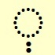

Lesson 3
The prefix vav וּמֹשֶׁהwords/_xx "and Moses"
There are 6 Hebrew "words": ו "and", הַ "the", ל "to" , בּ "in" , מִ "from" and כּ "like/as" , which never occur as separate words but are always attached to the beginning of another word. These "words" occur more than 100,000 times in the Tanakh, so it's really important to learn them.In this lesson we learn about the most frequently occurring "word" ו which is often translated as "and".
Words starting with ו
Hardly any words in the Tanakh actually have ו as their first letter.
וָוalefbet_consonants_and_vowels/vav meaning "a hook" occurs 20 times in Exodus (chapters 26,27,36,38) in descriptions of the Temple (or tent of meeting?), וַשְׁתִּיwords_plus/w000_vashti is the name of the queen in the book of Esther, there are a few more that each only occur once
Apart from these a word starting with vav is either the prefix "and" or a verb, about 50/50
In this lesson, prefix "and", next lessons, verbs starting with ו
vav "hooks" itself onto the beginning of words, and, sneak preview, also onto the end (his son, his sons)
words/w013_bno his son words/w013_banav his sonsAlter (this is about verbs I think) “[T]he characteristic biblical syntax is additive,” he writes. The simple “and” (the vav prefix), Alter writes, is “the way the ancient Hebrew writers saw the world, linked events in it,” yet previous translators have routinely elided the biblical “and”s. Thus, he notes, his translation of the four and a half verses in which Rebekah waters Abraham’s servant’s camels has 15 “and”s; the Revised English Bible has just five. It is impossible to miss the effect.
the prefix vav "and"
The consonant וְ alefbet_consonants_and_vowels/v is often added to the beginning of a word. When it's added to any word except a verb it means "and". (And in fact, when it's added to a verb it's also often translated as "and".)
Examples:
יְהוָה
וַיהוָה
אֱלֹהִים
וֵאלֹהִים
אֱלֹהֵי
וֵאלֹהֵי
|1| |1 | | 1
God|and God| God, gods | and God, and gods | God of, gods of|and God of, and gods of
words
w062_adonai| w062_vadonai| w018_elohim| w018_velohim|w018_elohei|w018_velohei
1 2|3 4|5 6
מֹשֶׁה
וּמֹשֶׁה
| 1
Moses |and Moses
alefbet_people_places/moshe|words_plus/w000_umoshe
1 2
בֵּן
וּבֶן
בָּנִים
וּבָנִים
בְּנֵי
וּבְנֵי
| 1 | |1||1
(a) son |and a son |sons| and sons| sons of | and sons of
words
w013_ben|w013_uven|w013_banim| w013_uvanim| w013_bnei|
1 2|3 4| 5 6
Then |Moses and Aaron| went and assembled all the elders of the Israelites.
Exodus 4:29
וַיֵּ֥לֶךְ מֹשֶׁ֖ה|וְאַהֲרֹ֑ן וַיַּ֣אַסְפ֔וּ אֶת־כׇּל־זִקְנֵ֖י בְּנֵ֥י|יִשְׂרָאֵֽל׃
2
tanakh/ex-04-29-db
|
Then Moses and Aaron went and assembled all the elders of the Israelites. Exodus 4:29 |
וַיֵּ֥לֶךְ מֹשֶׁ֖ה|וְאַהֲרֹ֑ן וַיַּ֣אַסְפ֔וּ אֶת־כׇּל־זִקְנֵ֖י בְּנֵ֥י|יִשְׂרָאֵֽל׃ 2 tanakh/ex-04-29-db |
Other translations: "but", "now", "since", "meanwhile"
Which vowel?
alefbet_consonant_plus_vowel/vuh
וַ
alefbet_consonant_plus_vowel/va
alefbet_consonant_plus_vowel/u
וָ
alefbet_consonant_plus_vowel/va
וִי
alefbet_consonant_plus_vowel/vi
וֶ
alefbet_consonant_plus_vowel/vei
וֵ
alefbet_consonant_plus_vowel/ve
alefbet_consonant_plus_vowel/vuh most frequent (about 50%) this is the "default" for "and" other vowels when particular combinations of consonant and vowel at the start of word, rules are complicated and you don't need to know them to recognoze vav.
וַ alefbet_consonant_plus_vowel/va next most frequent, but mostly verbs
alefbet_consonant_plus_vowel/u next most frequent, mostly not verbs
Sometimes וְ alefbet_consonants_and_vowels/v added at the beginning of a word becomes the vowel וּ alefbet_consonants_and_vowels/u When this happens, the וּ alefbet_consonants_and_vowels/u is always a separate syllable (ie, the next consonant in the word is the start of a new syllable.)
See וּ at the start of a word in Alefbet extra for more information.
וְ alefbet_consonants_and_vowels/v becomes וּ alefbet_consonants_and_vowels/u when it's added at the beginning of words starting with: בּ, מ, פּ or

בֵּן
וּבֶן
| 1
(a) son |and a son |
words
w013_ben|w013_uven
1 2
מֹשֶׁה
וּמֹשֶׁה
| 1
Moses |and Moses
alefbet_people_places/moshe|words-plus/w000_umoshe
1 2
פַּרְעֹה
וּפַרְעֹה
| 1
Pharaoh |and Pharaoh
alefbet_people_places/paroh|alefbet/ufaroh
1 2
דְּבָרִים
וּדְבָרִים
| 1
words |and words
alefbet_words/w030_dvarim|alefbet_words/w030_udvarim
1 2
Note that בּ alefbet_consonants_and_vowels/b becomes ב alefbet_consonants_and_vowels/v and פּalefbet_consonants_and_vowels/p becomes פalefbet_consonants_and_vowels/f
וְ alefbet_consonants_and_vowels/v becomes וִי alefbet_consonant_plus_vowel/vi when it's added to words starting with יְ for example, יְהוֺשֻׁעַ alefbet_people_places/yhoshua becomes וִיהוֺשֻׁעַ words_plus/vihoshua Note that the initial consonant sound "y" in יְ disappears and וִיalefbet_consonant_plus_vowel/vi is pronounced "vi" More examples: יְהוּדָה alefbet_people_places/yhudah becomes וִיהוֺשֻׁעַ words_plus/vihudah And יְרוּשָׁלִַם alefbet_people_places/yrushalayim becomes וִירוּשָׁלִָם words_plus/virushalayim
Only occurs infrequently
no content Exercise Practise finding "and" joining 2 words in the Tanakh
no text yet